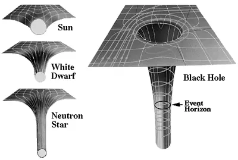

Black Holes
Back to black holes. Now this will kind of break your brain because the analogy above struggles with this part. Iron balls could be planets, a gold ball could be the sun, a tungsten ball could be a white dwarf, but a black hole? A black hole is so dense that there is nothing I could compare it to. A helpful view of this is below:

A black hole is so dense that it creates what we call an Event Horizon. Putting it technically, this is the area where the velocity to escape the black hole’s pull is greater than lightspeed (which is the fastest anything can go). Anything that goes that deep into the black hole is doomed to stay. That also means that no light can escape, making it pitch black. Hence the name, black hole. How did we get a picture of it or even notice it at all, I can hear you asking. That’s thanks to the light that other entities around it give off- that is the entities that have yet to be dragged into the hole. The funny thing is, its gravitational pull is so strong that it actively warps spacetime.
Parts of the Black Hole:
- Singularity
- Event Horizon
- Event Horizon Shadow
- Photon Sphere
- Doppler Beaming
- Corona
- Disk
- Particle Jets
What's this all supposed to mean?
So… What’s on the other side? No one knows. Anyone who were to travel even near a black hole would be pulled in and crushed like a soda can. Well, maybe worse than a soda can but I digress. That’s why they’re so mysterious. The center of the black hole is called a singularity. What does that mean? Who the hell knows? Usually, in spacetime, an object will always take the straightest lines in space; constantly moving. A Spacetime singularity makes the object disappear.
It’s foundational knowledge that nothing can be created and destroyed with 0 output. Matter cannot be made or destroyed, so this is super troublesome. And get this: time changes with gravity. You read that right, we call that gravitational time dilation. Bennett’s book put it best: “To anyone watching from a distance, time comes to a stop at the event horizon. If you could observe clocks placed at varying distances from the black hole, you’d see that clocks nearer the event horizon run more slowly and clocks at the event horizon would show time to be frozen.” (Bennett, 2007) In space, time is not static or flat. Instead, it’s dynamic and bendable.
Our sun is constantly moving, and us with it: